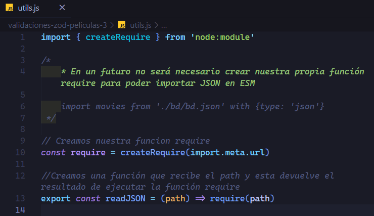
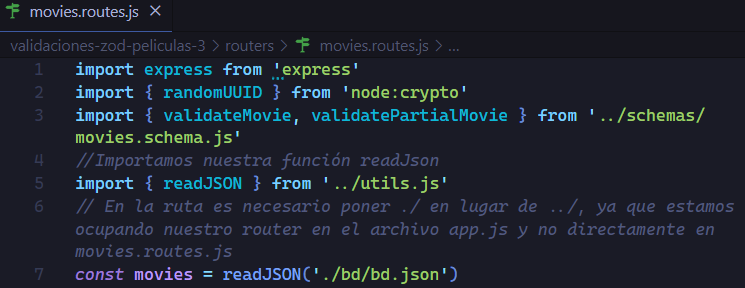
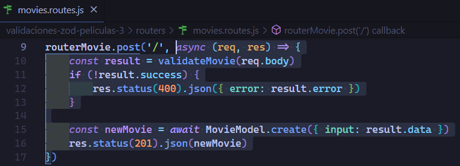
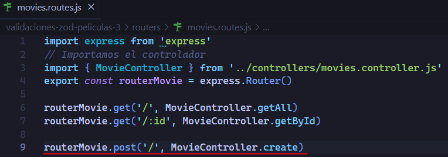

Antés de entrar de lleno a MVC, lo que haremos es separar aun más responsabilidades ya que en nuestro archivo app.js estamos juntando demasiadas funcionalidades, y lo más recomendable es tenerlo por separado, por ejemplo el middleware de cors.
Entonces lo que haremos es crear una carpeta llamada middlewares, con el archivo movie.middleware.js.
Así quedaria nuestro archivo movie.middleware.js
Código con comentariosCódigo sin comentarios
Ahora en nuestro archivo app.js importamos esa función y la ejecutamos como middleware.
Para mejorar aún más, podemos separa en un archivo separado la forma en que importamos nuestro JSON.
Crearemos un archivo nuevo en la raiz llamado utils.js y dentro crearemos una función que se llame readJson(path) que retorne el resultado de ejecuta nuestra función require()
archivo utils.js
De esta manera ocupamos nuestra función
De esta manera tenemos mas limpio y separado nuestro código, como podemos ver ahora nuestro archivo app.js se ve mucho mejor sin tanto código así como las rutas hemos separado el como se importa un Json y de esta manera ya no se sabe directamente en el archivo movies.routes.js como se importa un JSON y solo nos enfocamos en traerlo.
Estructura MVC
En esta sección veremos más código que teoria, si queremos saber más, podemos ir a la parte de conceptos importantes donde vemos la parte téorica.
Pequeño recordatorio de lo que es el Modelo, Vista, Controlador.
Una de las grandes ventajas que nos proporciona MVC, es que tenemos separación de conceptos y si en dado caso por ejemplo en la vista queremos migrar de REACT a VUE, el módelo y el controlador no se tendrían que ver afectados.
Express es un framework que está muy enfocado en MVC.
Nosotros nos enfocaremos en la parte más tradicional o pura de MVC por así decirlo, ya que al pasar de los años se han ido agregando más conceptos a esta arquitectura, tal como es el caso de ASP.NET con MVC5 que brinda muchos más conceptos.
Estaremos viendo la estructura de carpetas de MVC tradicional pero más adelante veremos lo que es Scremen Architecture.
Así quedaria nuestra estructura MVC tradicional.
Models
En nuestra carpeta models creamos un archivo llamado movie.model.js
Para crear nuestro modelo nosotros estaremos utilizando clases, ya que para un futuro cuando ocupemos typescript nos permite tipar perfectamente como tienen que ser nuestros modelos para que sean intercambiables. Pero bien podemos ocupar tambien el sistema de módulos con funciones.
Antes de crear nuestros modelos iremos al archivo movies.routes.js y explicaremos el problema que tenemos hasta ahora.
Ahora si procedemos a crear nuestros modelos.
Factorizando (/movies) a utilizar movieModel
Empezamos por factorizar en el endpoint (/movies) que ya sabemos que nos devuelve las películas filtradas por un param query y si no lo tiene filtra todas las películas. Lo que haremos es cortar el código mencionado en la imagen.
Ahora en nuestro archivo movies.model.js crearemos una clase llamada movieModel y crearemos un método estático llamado getAll de forma asíncrona para que devuelva una promesa, y la hacemos asíncrona aunque sabemos que en realidad nuestro proceso en este caso es síncrono, pero siempre es mejor estar abiertos a que se pueda utilizar tanto síncrono como asíncrono.
Y es muy buena práctica pasar un objeto en lugar de parámetros sueltos, así es más facil mantener nuestro modelo, y aprovechamos para mantener el contrato del módelo.
En nuestro endpoint (/movies) quedaría así.
Resultado de la factorización utilizando ahora nuestro modelo
Factorizando (/movies/:id) a utilizar movieModel
Ahora seguimos por factorizar el endpoint (/movies/:id)
En el archivo movies.routes.js cortaremos de nuestro endpoint (/movies/:id) la parte marcada.
En nuestro archivo movie.model.js en nuestra clase MovieModel crearemos otro método estático para nuestro endpoint (/movies/:id) llamado getById que se encargara de devolver la película.
Nuestra ruta (/movies/:id) quedaría así.
Factorizando ruta post (/movies) a utilizar movieModel
Cortaremos la parte seleccionada de la imagen.
Creamos nuestro método estático en nuestro modelo, y lo llamamos create y pegamos el código. Como estamos generando nuestro ID dinámicamente nosotros, hay que recordar que debemos importar el módulo crypto para poder ocupar el RandomUUID().
En nuestra ruta, el código quedaría de la siguiente manera.
Factorizando ruta delete (/movies/:id) a utilizar movieModel
Cortaremos lo siguiente de nuestra ruta.
En nuestro modelo creamos nuestro método estático llamado delete, y pegamos el código dentro.
Nuestra ruta quedaría de la siguiente manera.
Refactorizando ruta patch (/movies/:id) a utilizar movieModel
Procedemos a recortar nuestra lógica de negocio de nuestra ruta.
En nuestro modelo creamos otro método estático llamado update y pegamos el código y le hacemos sus respectivas modificaciones.
Así quedaría nuestra ruta.
Con esto hemos terminado de mover la lógica de negocio que teniamos incluido en nuestras rutas y las hemos separado en una capa diferente que es nuestro modelo.
De esta manera nuestras rutas ya no contienen logíca de negocio y lo mas importante es que las rutas ya no saben lo que se hace como tal, si no que solo mandan a traer la información ya procesada y no saben si estamos utilizando alguna base de datos o si estamos mandando a traer información de local, etc.
Esto es lo importante de la separación por capas, o cuando se habla de termino de separar responsabilidades.
Lo más importante es que este modelo podria cambiar totalmente y no deberiamos tener problemas si llegamos a cambiar a una base de datos, etc.
Manjear errores en modelos
Ahora lo que deberiamos hacer para demostrar que nuestro código es robusto ya que hemos ocupado async-await para nuestros endpoints deberiamos de utilizar try-catch. Ya que sabemos que cuando utilizamos async-await es importante controlar los errores, de lo contrario nuestra aplicación se caeria.
Veamos este ejemplo, lo que hacemos es encerrar en un try-catch todo nuestro código y capturar un error solamente cuando sea algo grave, pero tambien dentro del bloque try estamos verificando con un if, si el resultado tambien es un error pero no tan grave y respondememos ese error tambien.
Muy importante para que nuestro código explicado en la imagen anterior funcione, nuestro modelo en caso de algun error deberia de enviar un error pero que no lo capture el try-catch, para eso deberiamos de utilizar algun tipo de sistema en el que devolviese por un lado el error y por otro lado el resultado y así asegurarnos de que podemos tener un try-catch a nivel de que nuestra aplicación solo falla por algo muy grave como algún error del servidor
Algo que tenemos es que en todas nuestra rutas estamos ocupando async-await por lo que nos veriamos obligados a usar en todas las rutas el bloque
try-catch lo cual seria mucho rollo.
Es por eso que la manera correcta de utilizar el try-catch sería dentro de un middleware pero lo veremos más adelante.
Lo importante es que si estamos utilzando async-await debemos de controlar los errores para que no muera nuestro proceso y se caiga nuestra API.
Lo que acabamos de hacer del manejo de errores en nuestro caso solo lo haremos con el endpoint que explicamos que es (/movies) y para los demás los dejaremos como están por el momento, pero es muy importante controlar los errores cuando usamos async-await, pero los dejaremos así ya que más adelante explicaremos como usar el middleware que ya mencionamos para utilizar el try-catch en lugar de estarlo poniendo explícitamente en cada endpoint.
Controladores
Ahora si empezamos con los controladores que actúan como el intermediario entre el modelo (los datos) y la vista (la interfaz de usuario).
Su principal responsabilidad es manejar las solicitudes del usuario y coordinar las acciones necesarias para actualizar el modelo y la vista según sea necesario.
En una aplicación web con Express.js, un framework de Node.js, el controlador sería una función o conjunto de funciones encargadas de manejar las solicitudes HTTP y gestionar la lógica de negocio de la aplicación.
Estas funciones de controladores las podemos ocupar utilizando tanto un objeto de funciones como clases. La elección entre uno u otro depende en gran medida de nuestras preferencias personales y del estilo de codificación que prefieramos.
NOSOTROS SEGUIREMOS UTILIZANDO CLASES PERO SI QUEREMOS VER COMO SERÍA MANEJAR UN CONTROLADOR CON UN OBJETO DE FUNCIONES PODEMOS DAR CLICK EN EL SIGUIENTE BOTÓN QUE NOS MUESTRA UN EJEMPLO DE COMO SERÍA.
Procedemos a crear un archivo llamado movies.controller.js
Dentro de nuestro archivo creamos nuestra clase llamada MovieController
Pero tambien cortaremos de nuestro archivo movies.routes.js las siguientes importaciónes que ya no se ocuparan en el archivo ya que moveremos las solicitudes de las rutas al controlador y las pegamos en el archivo movies.controller.js
Algo muy interesante que veremos es el hecho de que con cambiar una simple línea de código nosotros podemos hacer que toda nuestra aplicación cambie entre tirar de local o una base de datos, pero lo veremos después
Así quedaría nuestro archivo movies.controller.js por el momento
Moviendo solicitud de la ruta (/movies) al controlador
Como ya sabemos el controlador es una función que maneja la solicitud HTTP, entonces lo que haremos es recortar nuestra solicitud para pasarlo al controlador.
En nuestro controlador los métodos estáticos que crearemos pueden tener el nombre que queramos, no es necesario que tengan el mismo nombre que él método del modelo, pero en nuestro caso el método de nuestro controlador tendrá el mismo nombre para que sea más fácil de entender, pero en realidad es muy raro que él método del controlador se llame igual al del modelo ya que un controlador puede mandar a traer varios modelos, por ejemplo que al momento de agregar algo nuevo podemos mandar a traer otro modelo para actualizar en otra parte distinta de nuestra web, esto se puede hacer desde el controlador o desde el modelo, pero lo más común es que el módelo sepa esa lógica de negocio que sea el, el que se encarga de actualizar otra parte al momento de insertar una película por ejemplo, pero no está de más saber que el controlador tambien puede hacerlo.
Entonces el nombre que le daremos al método en nuestro caso será getAll() al igual que el del modelo para que sea mas fácil enterlo para nosotros, pero ya sabemos que lo más común es que tengan diferentes nombres y no coincidan.
Ahora nuestra ruta (/movies) quedaría de la siguiente manera.
Ahora seguiremos con lo demás métodos de nuestro controlador que tendran el mismo nombre que el del modelo.
Moviendo solicitud de la ruta (/movies/:id) al controlador
Recortamos lo siguiente de nuestra ruta
Creamos el método estático getById y pegamos el código y le hacemos sus pequeñas modificaciones de no utilizar una arrow function y dejarlo como método de clase.
Nuestra ruta (/movies/:id) quedaría de la siguiente manera.
Moviendo solicitud de la ruta post (/movies) al controlador
Recortamos lo siguiente de nuestra ruta

Creamos el método estático create y pegamos el código y le hacemos sus pequeñas modificaciones de no utilizar una arrow function y dejarlo como método de clase.
Nuestra ruta post (/movies) quedaría de la siguiente manera.

Moviendo solicitud de la ruta delete (/movies/:id) al controlador
Recortamos lo siguiente de nuestra ruta
Creamos el método estático delete y pegamos el código y le hacemos sus pequeñas modificaciones de no utilizar una arrow function y dejarlo como método de clase.
Nuestra ruta delete (/movies/:id) quedaría de la siguiente manera.
Moviendo solicitud de la ruta patch (/movies/:id) al controlador
Recortamos lo siguiente de nuestra ruta
Creamos el método estático update y pegamos el código y le hacemos sus pequeñas modificaciones de no utilizar una arrow function y dejarlo como método de clase.
Nuestra ruta patch (/movies/:id) quedaría de la siguiente manera.
Ahora si en nuestro archivo movies.routes ya no se sabe como se controlan las rutas y solo se encarga de enrutar y nuestro controlador es el que sabe como tiene que controlar las películas y el módelo es el que sabe como se recuperan las películas.
Ahora si hemos separado en diferentes capas la información de como se debe ir moviendo
Validaciones en modelos y vistas y controladores
Ahora una pregunta que nos podemos hacer es ¿Donde van las validaciones?
Pude haber gente que nos díga que las validaciones solo son algo del modelo y tienen razón pero tampoco tienen razón es decir que las validaciones hay en todas las capas.
Hay que validar los datos en todas las capas (views,controllers,models) solo que las validaciones que se van hacer en cada una son de diferentes niveles.
Por ejemplo las validaciones del input del usuario se pueden realizar en las 3 capas de hecho, pero obviamente el nivel de validación de cada una va a ser diferente.
Validación en el controlador
En el controlador normalmente se centran válidaciones de formato, corencia que tengan los datos que en realidad queremos recibir y que se puedan procesar para antes de pasarlos al modelo. Entonces justamente el input del usuario que viene de la vista es buena idea que lo validemos en el controlador antes de enviarlo al modelo, mapearlos y tal, comprobar si un campo es requerido, que este presente, que la cadena tenga un formato, que el número esté dentro de un rango.
Osea, esto, lo que hace es que haya más validaciones que ya nos previenen que hayan procesamientos de entrada en el modelo que son incorrectos o maliciosos y así antes de llegar a la lógica de negocio ya tiene sentido.
Veamos la siguiente lista mas detallada.
Validaciones de entrada: Estas validaciones se realizan antes de que los datos se pasen al modelo. Se utilizan para garantizar que los datos ingresados por el usuario sean válidos antes de procesarlos. Esto puede incluir:
Verificación de la existencia de datos: Comprobar si los datos requeridos están presentes en la solicitud.
Verificación de seguridad: Validar que los datos no contengan contenido malicioso o inseguro (por ejemplo, ataques de inyección SQL).
Validaciones basadas en roles: Verificar que el usuario tenga los permisos adecuados para realizar ciertas acciones.
Validaciones de flujo de aplicación: A veces, los controladores también pueden validar el flujo de la aplicación, como verificar si un usuario está autenticado antes de permitir el acceso a ciertas funciones.
Validaciones en la vista
En la vista tenemos las típicas válidaciones de interfaz del usuario, son las mas inútiles en cuanto a lógica de negocio pero son las más necesarias para la experiencia del usuario.
En resumen las validaciones en la vista solo son para experiencia de usuario, ya que es mejor que le digamos al usuario que un campo es requrido antes de procesarlo.
Validaciones en el modelo
En el modelo tambien se hacen validaciones, normalmente las validaciones que se hacen en el módelo son más de reglas de negocio, coherencia de datos relacionados sobre todo con la persistencia de estos datos en la base de datos, si la base de datos por ejemplo es integer es imposible que le queramos meter una cadena de texto y por lo tanto ya tenemos una validación en ese punto, pero hay otras por ejemplo intentamos guardar un usuario que el controlador nos pasa que tiene un id que en la base de datos ya existe, esa validación de verificar que el usuario no exista solo la podemos hacer en el modelo o si alguien intenta registrar un email que ya existe, garantizar la integridad y la coherencia de los datos es del modelo, son validaciones que obviamente hay que hacer en el modelo.
No podriamos hacer en el controlador por ejemplo una validación de integridad de datos porque no sabemos en el modelo, pero si podemos discutir y comentar si tendria sentido si el modelo nos exportase un método que pudieramos llamar desde el controlador para validar datos, por ejemplo para decir ¿existe esta id? y entonces que el controlador sea el que lo verifique pero esa implementación no la vamos a poder tener dentro del navegador, va estar dentro del modelo la podemos llamar desde el controlador pero va estar en el modelo.
Veamos la siguiente lista mas detallada
Validaciones de datos: Esta es la forma más común de validación en la capa del modelo. Aquí se asegura que los datos ingresados cumplan con ciertos criterios, como por ejemplo:
Campos requeridos: Garantiza que los campos obligatorios no estén vacíos.
Longitud de campos: Verifica que los datos no excedan cierta longitud.
Formato de datos: Asegura que los datos ingresados sigan un formato específico (por ejemplo, una dirección de correo electrónico válida).
Unicidad: Asegura que ciertos campos sean únicos en la base de datos (por ejemplo, un nombre de usuario).
Validaciones de negocio: Estas validaciones garantizan que los datos ingresados cumplan con reglas específicas de negocio. Por ejemplo:
Validar que una cantidad de productos en el inventario no sea negativa.
Validar que una fecha de inicio sea anterior a una fecha de finalización.
En resumen las validaciones obligatorias y más importantes son las del controlador y modelo. Las de la vista solo sirven para experiencia de usuario.
Demostrar que nuestra aplicación es escalable y mantenible
Vamos a ver algo interesante de lo módelos y demostrar lo que comentabamos hace un momento sobre cambiar con una sola línea de código entre ocupar un local o una base de datos.
Lo primero es crear en nuestra estructura de archivos en la carpeta modelos a la siguiente manera, vamos a crear carpetas para cuando queramos utilizar un local para hacer nuestras pruebas que es lo que hemos estado haciendo hasta ahorita, y otras para cuando queramos ya hacer las pruebas en una base de datos en mongodb o en mysql.
Lo importante es que nuestros modelos deben tener el mismo contrato de tal manera que en nuestro controlador con solo cambiar el import a tirar ya sea de nuestro local o de una base de datos, con tener un modelo donde uno se conecta a un local y otro se conecta a una base de datos, 2 archivos que tienen el mismo contrato, solo cambiando el import pordemos tirar de un local a una base de datos, pero aquí hacemos un paréntesis (no es cambiar el import como tal sino que la idea es inyectarle el modelo) esto tiene que ver con arquitectura y patrones de diseño, pero por ahora solo queremos ver la potencia de esto.
Lo que hemos hecho es crear un modelo que tambien se llama MovieModel que tiene el misom contrato pero que obviamente el modelo hace cosas diferentes de como crea las películas, de como las borra y todo lo demás. El tema es que con lo que hemos hecho esta la clave de la arquitectura, de porque es importante la arquitectura, porque vale la pena aprender patrones de diseño, pues es el hecho de que de forma totalmente transparente ahora estamos conectados a una base de datos.
El tema es que lo que estamos consiguiendo es que nuestra aplicación ahora sea más escalable y mantenible que antes, si hoy por lo que sea en lugar de mongodb queremos cambiar a redix solo tenemos que crear el archivo del modelo de la película para redix (crear la carpeta redix y dentro su modelo tal como lo hicimos con mongo y mysql) y por otro lado solo tenemos que cambiar un import en nuestro controlador. No tenemos que tocar nada del controlador porque el controlador ya sabe como tiene que recuperar y llamar a los modelos, lo importante es que nuestro modelos tengan exactamente el mismo contrato y eso es justamente la clave de porque en empresas de producto, en servicios y tal es importante aplicar arquitecturas.